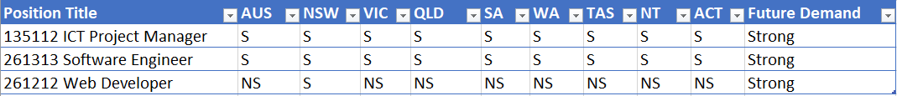
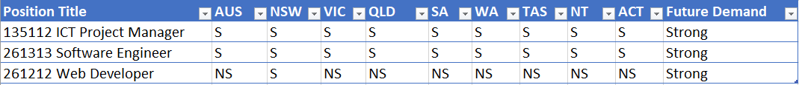
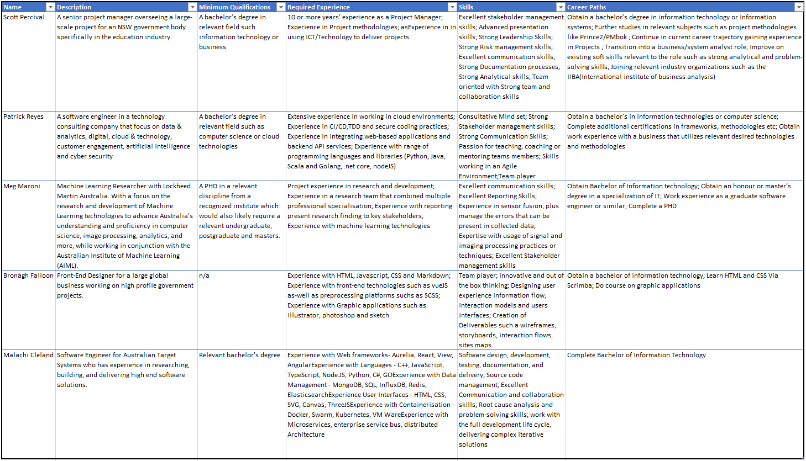

Career Plans
Overview
Our teams’ careers offered quite the variation as each team member has a unique career with components that different to the others. However, in terms of core skills and the starting points of a career plan to achieve them, the careers also had a lot of similarities. We believe these differences and similarities complimented both our current and previous assignment well. Allowing the individual to apply the skills of their futures careers in individual areas these assignments to beneficial results while working well as team. The teams' careers are as follows:
- Scott Percival – Senior Project Manager
- Bronagh Falloon – Front End Developer
- Meg Maroni – Machine Learning Researcher
- Malachi Cleland – Software Engineer
As some of these roles are more specialized positions that didn’t offer much useful data that could accurately be portrayed in the Burning Glass Data (Labour Insight Jobs (Burning Glass Technologies), 2018) and other data resources, they were categorized into 3 umbrella Job Titles: Software Engineer, Web Developer, and IT Project Manager. These may vary slightly in name specification over the data sets, but each role accurately represents the main aspects of what the groups careers are.
Burning Glass Data
Job Tile/Occupation Ranking (Labour Insight Jobs (Burning Glass Technologies), 2018) :
- 1st. Software Engineer (29,456)
- 2nd. Web Developer (5,990)
- 3rd. IT Manager (3,749)
(Labour Market Insights, n.d.)
Future Growth Prospects
- 1st. Software & Application Programmers (27%)
- 2nd. ICT Project Manager (17.70%)
- 3rd. Multimedia Specialists and Web Developers (13.70%)
Full-time Share
- 1st. ICT project Manager (97%)
- 2nd. Software & Application Programmers (90%)
- 3rd. Multimedia Specialists and Web Developers (80%)
Female Share
- 1st. ICT Project Manager (21%)
- 2nd. Software & Application Programmers (17%)
- 2nd. Multimedia Specialists and Web Developers (17%)
Job Growth Climate (5 years)
(Seek, n.d.)
- 1st. Software Engineer (30%)
- 1st. Front End Web Developer (30%)
- 2nd. IT Project Manager (8.30%)
 

SPL Future Demand Ranking
(National Skills Commission, 2021)
- 1st. ICT Project Manager
- 1st. Software Engineer
- 2nd. Web Developer
Comparisons
What common elements are there, if any?
As you can see from the data sets, the careers have some common ground. Such as:
- All have strong number of jobs listing available
- All have a strong future demand
- There are shortages for IT managers and software engineers across Australia
- All 3 have a low Female workforce demographic that will hopefully change over time
On top of the data set, the team review and believe our career also share the following similar elements.
- All roles require strong analytical and/or problem-solving skill.
- All roles require the person to have strong teamwork and collaboration skills.
- Several of the roles require various leadership skills.
- Several of the roles require familiarities and skills associated with project management, either as part of the project or leading it.
What differentiates each position from the others?
As you can see, the data sets the careers also have some differences, including:
- Machine learning researcher failed to feature in the data sets on their own due their highly specialised nature and assumptions are made based on grouping it with ICT project management
- Software engineering is by far the most popular job according to the data in the IT industry both currently and in the future
- There are currently no shortages for Front end web developers based on the data
On top of the data set, the team reviewed and believe our career also have the following differences from each other.
- One role requires a Ph.D. before being eligible
- Two of the roles could be considered quite late-stage and advanced positions in one career path, requiring 10+ years of education or work experience while the others are reasonably more on the side of intermediary roles to be considered.
- Only one role requires skill or experience with graphic application such as Illustrator.
- Only one role requires skills or knowledge specific to project methodologies PRINCE2, PMBOK, SCRUM, etc.
- Only one role requires experience in sensor fusion or expertise in usage of signal and imaging processing practices and techniques
How similar or different are the career plans across the group?
As you can see from the career plan table below. Our teams' career plans at the most basic level are somewhat similar. All involved completing a relevant bachelor’s degree in information technology, computer science, information systems, software engineering, or similar certification. Most involve pursuing further expertise and skills by completing MOOC courses or similar such as Scriba or industrial-specific courses such as PRINCE2/PMBOK methodologies. Several involve working in similar roles to that of the group to build further work experience for eligibility for their desired roles.
Where they differ, at least in two of the cases, is the timeline to reach a stage where the person would be considered skilled and experienced enough to fill such a position. Both Senior Project management and Machine Learning Researcher positions will require 10+ years of additional education and/or relevant work experience. Machine learning Researcher by far has the greatest academic requirements requiring a Ph.D. on top of establishing a career in similar roles prior to being eligible.
Career Plan Table
Conclusion
Team TBD's Careers and career plans are ultimately both similar and different. As is the nature of the IT industry. Looking at the data all our career has strong future demand and growth, they all share similar skills, and we all are pursuing a similar path to obtain our goals. Completing both the previous and current assignment however these different and similarities have been invaluable to this performance, allowing us to work well as a team and to utilize our unique skills to meet the assignments requirements One of the big contrasts however, we believe discussing amongst ourselves as-well as reviewing our own data is the timeline to obtain some of these careers. Two are obtainable relatively soon whereas the other are quite senior roles and will require many years of further education and experience before the team members would be realistically eligible to work in their planned careers.